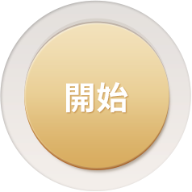
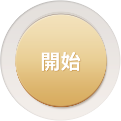
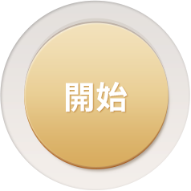

MedicalSuite
開始
教學
記錄
電子書
中風因子
本日復健動作列表
自主復健
請選擇動作次數
動作
未選擇
上舉
下放
摸耳朵
踢腿
挺腹
側抬腿
側上斜舉
手部內彎前伸
次數
未選擇
5
10
15
20
25
30
35
40
45
50
角度
未選擇
90°
120°
180°
左右手
未選擇
左手
右手
位置
未選擇
肩膀
耳朵
手錶
未選擇
Pebble
SmartWatch2
Geak
AndroidWear
start
影片示範
圖片示範
握法
示範
上舉示範影片
下放示範影片
耳朵示範影片
上舉錯誤示範影片
下放錯誤示範影片
摸耳朵錯誤示範影片
踢腿示範影片
挺腹示範影片
側抬腿示範影片
踢腿錯誤示範影片
側抬腿錯誤示範影片
請選擇您的性別 :
男性
女性

點
我
返
回
完成
2014 / 07/07 (Sat)
動作
上舉
次數
角度
位置
恭喜你!完成了，今日的練習
顯示加速度
返回首頁
中風因子檢測量表
Age(年紀)：
54-56
57-59
60-62
63-65
66-68
69-71
72-74
75-77
78-80
80-83
84-86
SBP(收縮壓)：
95-104
105-114
115-124
125-134
135-144
145-154
155-164
165-174
175-184
185-194
195-204
Hyp Rx(服降血壓藥之後的收縮壓)【無服藥則選：無服藥】：
無服藥
95-104
105-114
115-124
125-134
135-144
145-154
155-164
165-174
175-184
185-194
195-204
Diabetes(糖尿病史):
無
有
Cigs(抽菸習慣)：
無
有
CVD(心肌梗塞、心絞痛、冠狀動脈血液灌流不足、間歇性跛行、充血性心衰竭)：
無
有
AF(心房顫震病史)：
無
有
LVH(心電圖證實左心室肥大)：
無
有


 
